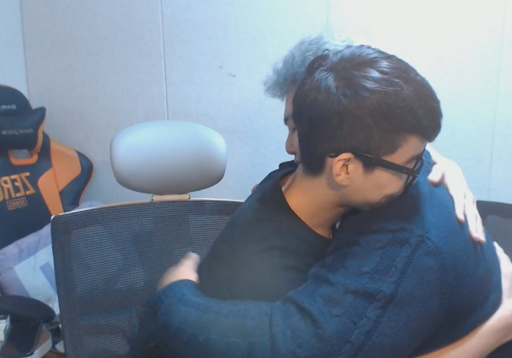

룩공사태
(이전게시글)
(본 페이지는 비하의 의도가 없는 코딩연습을 위한 페이지입니다.)
(참고로 돼지,소의 부위인 사태가 아니다)
(룩우스와 미의여신 혁프로디테)
2016년 11월 15일 아침이슬이 내려앉는시각인 새벽4시
사랑과전쟁과 무협지를 보고자란 공혁준은 의협심에 룩삼 개인 사생활을 폭로한다
자세한건 꺼무위키
이 사건 이후 둘을 결별을 하게되고 서로 언급하지 않기로 하면서 화해를 하지 않는다.
이후 2017년 11월 18일 공방 하스스톤 드림매치에서 룩공매치가 성사되었고, 2대0으로 룩삼이 승리하였고,
경기가 끝난직후 룩삼이 손을 내밀어 공혁준에게 악수를 청한다.
정확히 5일뒤인 2017년 11월 22일
룩삼의 방송에 공혁준이 출연하여 화해를 하였다

이후 여러 스트리머에게 이 클립이 퍼져나가 많은 환호를 받았다
기념이모티콘으로 발행된 룩공티콘


우욱 십
(이전게시글)